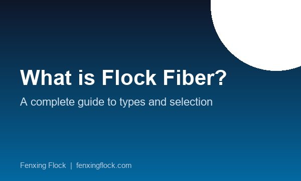

What is Flock Fiber? A Complete Guide to Types, Uses, and Selection
August 2026
A beginner-friendly introduction to flock fiber — how electrostatic flocking works, the three main material types, key specifications, and how to choose the right one.
Read Article →